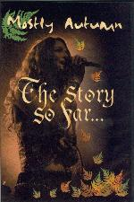

| Artist: | Mostly Autumn |
| Title: | The Story So Far...DVD |
| Label: | Classic Rock Legends CRL0834 |
| Length(s): | 90+ minutes |
| Year(s) of release: | 2001 |
| Month of review: | [08/2002] |
| 1) | Porcupine Rain | |
| 2) | Nowhere To Hide | |
| 3) | Evergreen | |
| 4) | Winter Mountain | |
| 5) | The Spirit Of Autumn Past | |
| 6) | Heroes Never Die | |
| 7) | Helms Deep | |
| 8) | The Night Sky | |
| 9) | Dark Before The Dawn | |
| 10) | Shrinking Violet | |
| 11) | Never The Rainbow | |
| 12) | Mother Nature |
Plus extra's
| 13) | Which Wood | |
| 14) | Out Of The Inn | |
| 15) | Winter Mountain (living Room Rehearsal) |
On my computer I had some problems with the sound (when the volume on the DVD went up, my speakers went down) and the cursor/menu did not work properly. This could have been my computer, because it worked fine on my brother's standalone DVD player. Then I could also see that the picture quality of this DVD is really quite good.
The performance then. Well, maybe we ought to speak of a band that has arrived. I can remember a Brit coming up to me during an early Progfarm (probably 1998), shaking his copy of For All We Shared and telling everybody there what a grand new band he discovered. Only later, in fact during my review of this dvd, did I remember the guy and it seems he was quite a fortune teller. These days Mostly Autumn is at the forefront of progressive folk, probably not as big as Iona yet, but getting there. They have joined the roster of Classic Rock Legends (the only recent band to do that) and are selling well. Their show at Progfarm was okay, but given what they do on their albums, I came back a bit disappointed. To me, Mostly Autumn is to be preferred in the studio's. The same holds for the concert on this DVD: I like it, but I still prefer them on their studio cd's. Anyway, the filming is quite good on this DVD: the band comes on, and you already get the impression that this is not just a concert start to finish, but something different. In fact, it turns out that the songs are not all from stage, but parts of it have been filmed in the way of a videoclip and also partly a rehearsal. The music and singing are certainly from the live concert, so although we alternate between the stage, the rehearsal and outside filming, the music is continuous. Especially during a song like The Night Sky (one of the high point anyway), the images of waves crashing and skies churning is really well done and also helps to alleviate the sameness in seeing the band perform. Many a band making a DVD could learn a lesson from this. Of course, many people will think: with the vocalist, you already have something to look at. Well, be that as it may, my feeling is that the video would have been way too static for ninety minutes.
The power of Mostly Autumn's music, especially when compared to the "competition" lies in the fact that the band can rock full force at times. On the other hand, not everybody will like Josh's vocals and maybe not everybody will enjoy seeing Heather at the forefront all the time, but together at least they give a good balance. Musically we get some folk tunes like in Heroes Never Die and Helms Deep, but also anthemic catchy rock songs like Nowhere To Hide, Winter Mountain, Never The Rainbow and Dark Before Dawn. Shrinking Violet is a point of rest admidst all this, reminiscent of All About Eve. Closer Mother Nature is a pure work of art with a sublime chorus, Floydian backing and a thunderous end. What a way to conclude.